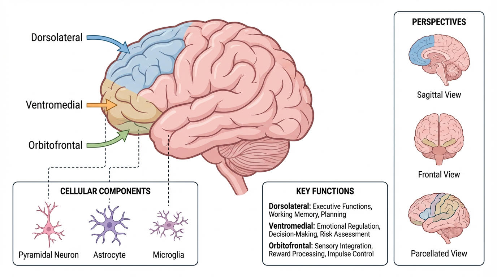
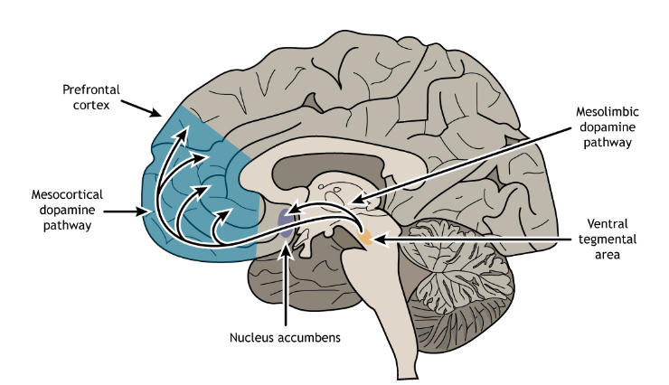
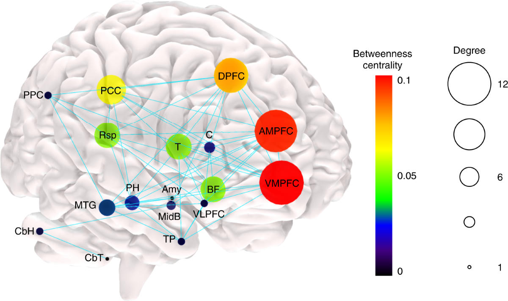

Those who have been delivered from the shackles that could constrain their joy often find themselves suddenly remembering how it felt to be a child. Not vague nostalgia for toys or endless summers, but a clean recognition: I have not felt this free, this present, this good since I was small.
That recognition is not sentiment. It is measurable. And the tool that makes reclaiming it possible for every human being sits behind the forehead of every person reading these words: the prefrontal cortex.
The Seat of Agency
The prefrontal cortex is the brain’s executive center. It plans, evaluates consequences, regulates emotion, holds goals in working memory, and exerts top-down control over more automatic systems. In childhood this region is still maturing. The constant adult machinery of self-monitoring, future threat projection, and social calculation has not yet fully locked into place. Reward and presence can move more freely.

When adults experience genuine deliverance — from addiction, chronic fear, corrosive resentment, or the daily grind of survival stress — the same executive systems can reassert influence. The capacity was never lost. It was only overridden by prolonged threat signaling and constrained reward pathways.
Pleasure, Meaning, and the Reward Circuit
True joy is not identical to temporary pleasure. Neuroscience distinguishes hedonic pleasure (feeling good in the moment) from eudaimonic well-being (a life that feels meaningful and aligned). Both draw on overlapping mesocorticolimbic circuits: the ventral tegmental area, nucleus accumbens, ventral pallidum, orbitofrontal cortex, and insula. Endogenous opioids and dopamine play central roles.

Chronic stress and addictive patterns can blunt the brain’s response to natural rewards — a state researchers call anhedonia. Yet controlled studies demonstrate that recovery of these circuits is possible. Mindfulness-based interventions, for example, have been shown to restore the capacity to savor ordinary positive experiences and reduce craving by re-engaging prefrontal regulation of subcortical reward systems.
Quieting the Background Noise
The default mode network (DMN) — centered on the medial prefrontal cortex, posterior cingulate, and related regions — supports self-referential thought, mind-wandering, and autobiographical memory. In states of flow and deep presence, DMN activity often decreases. The constant “me and my problems” chatter quiets. Attention and reward networks come forward.

Childhood often features lower DMN dominance in this sense. When adult constraints lift, the same quiet becomes available again. The prefrontal cortex helps decide which networks stay in the foreground.
The Brain Remains Plastic
Neuroplasticity does not stop at twenty-five. Positive memory reactivation can suppress depression-like behavior in experimental models. Early memories of warmth and safety correlate with greater distress tolerance in adulthood. The circuitry that once supported childhood lightness remains available for reconnection.
This is not mystical. It is the objective finding that the human nervous system retains the capacity for reorganization throughout life. The prefrontal cortex is the primary instrument for directing that reorganization toward valued ends.
The Same Fact, Older Language
Nearly every serious spiritual tradition describes the identical pattern. Deliverance is the recovery of an original lightness that was covered rather than destroyed. The child is not idealized as perfect; the child is recognized as less armored by accumulated fear, pride, and attachment. When the armor is set down, the underlying capacity reappears.
Science does not replace that insight. It supplies the mechanism: prefrontal regulation of threat and reward systems, quieting of self-referential loops, and the lifelong plasticity that makes restoration possible. Hope is no longer required as an act of faith alone. It is supported by evidence of how human brains actually work.
Why This Matters in the Tower District
We know what constraints look like. Fear that keeps people off the streets. Habits that drain will. The exhaustion of watching the same problems cycle. Politics at its best is not only about power. It is about whether the conditions of daily life allow human beings to live without constant strain on the nervous system and the spirit.
Every person possesses a prefrontal cortex. Every person retains the capacity for top-down control, for the revaluation of what is worth pursuing, and for the quiet recovery of natural reward. The value each life earnestly deserves is not reserved for a fortunate few. It is accessible through the same biological equipment that produced childhood joy in the first place.
That recognition restores something essential: faith in human possibility grounded in objective evidence rather than empty optimism. The capacity was never lost. It was only weighted down. And the weight can be lifted.
True joy is attainable by everyone who can still choose. The prefrontal cortex is the instrument. The evidence is already in the brain.